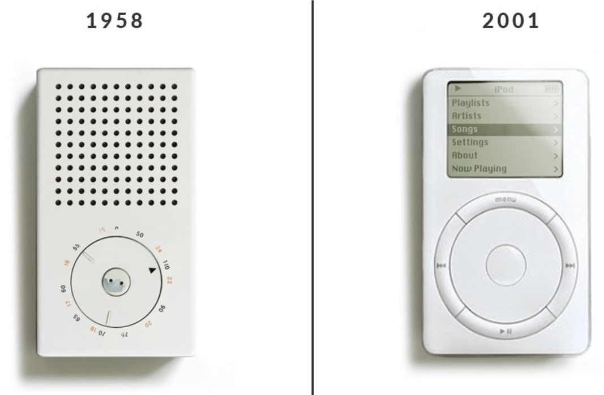
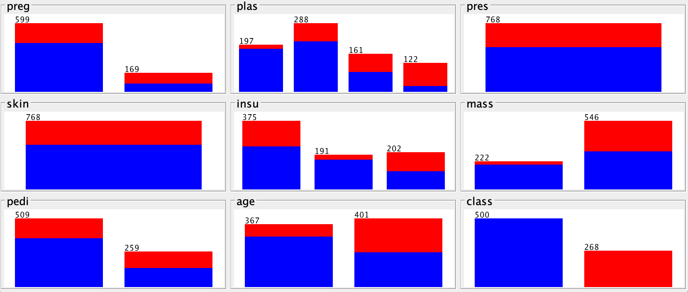
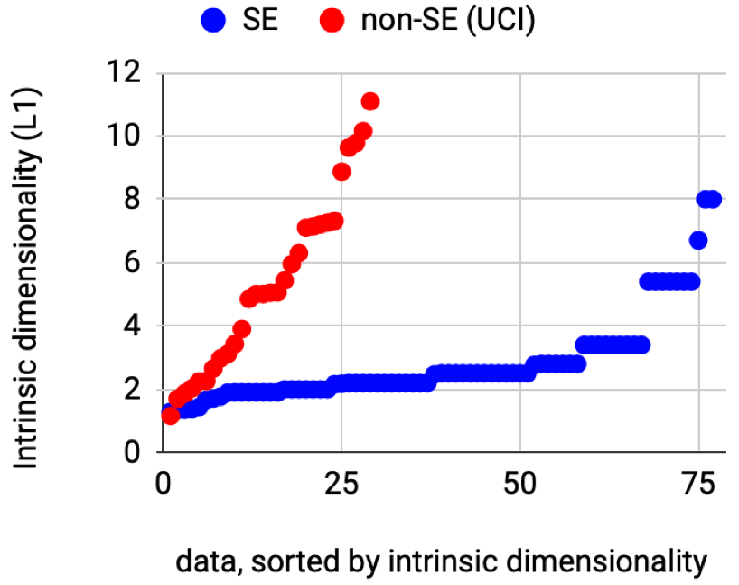
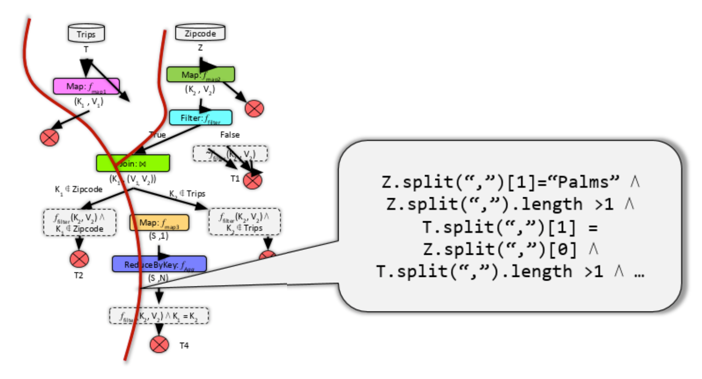

Scared of AI?
 Are you trapped like a deer in the headlights, frozen and terrified, by on-coming AI software? Well, then you are not a software engineer. When SE people are worried about software, they change it. Opaque systems are refactored into simpler and more maintainable code. Complexity is removed. Simplicity is installed.
Are you trapped like a deer in the headlights, frozen and terrified, by on-coming AI software? Well, then you are not a software engineer. When SE people are worried about software, they change it. Opaque systems are refactored into simpler and more maintainable code. Complexity is removed. Simplicity is installed.
Lets Fix AI.
Time to start practicing refactoring AI tools. Start with a simple object model then do some mixing-and-matching to implement an interesting range of functionality. Here’s what you have already (in under 500 lines of code):
- Explainable AI that generated tiny symbolic descriptions of data;
- Single and multi-objective reasoning so we can handle classification, regression, and optimization tasks;
- Semi-supervised learning where we guess most of the labels from a few samples.
- (Well… not really. Currently, this is more an aspirational statement. But a man’s reach should exceed his grasp, or what’s a heaven for?)
There’s nothing magical about my code. Its certainly not the absolute optimum way to implementing all these tasks. In fact, the best thing I can say about this code is that it is short and easy to change. Treat it as a challenge of something you can do better than me. To practice refactoring AI tools, start with the few hundreds (or so) lines of code shown below. Implement them in your favorite language. Then try splashing our a little- mix and match some functionality. Pull out some code then add in something different. Test that addition. See if it works better than my stuff. Have fun with it!
And when you do, be a software engineering. Try and come up with some underling object model that lets you handle not just your new idea, but also a whole product line of variations around that idea.
Why “Keys?”
But why is it called keys? Well, the “key” to simpler AI is “keys”. Many results show that systems often exhibit the same effect 1; i.e. a few key features control the rest. Just to say the obvious, for systems containing a few keys, then explanation and control is just a matter of running a handful of “what-if” queries across the keys. By exploiting the keys effect, it us possible to dramatically simplify the development of AI systems, as well as explaining their inner workings.
Less, but Better
 One of my heroes is the industrial designer Dieter Rams. Credited with hundreds of iconic products (everything from the Oral-B toothbrush to home audio equipment, Braun coffee makers to calculators), he inspired a generation of designers, including those designing Apple products.
Rams firmly believes that “good design” involves as little design as possible which he describe as “Weniger, aber besser”; which translates to less, but better.
So how can we be less but better with AI? What do we now know about AI that we did not know before? And how can we use that to simplify how we do AI?
Manifolds
 One lesson learned over the last two decades is that the best thing to do with lots of data is (carefully) throw most of it away 2 3. The reason most data mining works is that tables of data (with many columns) can be approximated by a lower dimensional manifold (i.e. a smaller number of attributes) without loss of signal. When data maps to a low dimensional manifold then there are fewer ways examples can differ. When differences are less then continuity increases between nearby examples. So when we cluster similar examples, then we do not to reason separately about each example. Rather, we just cluster the data and reason about a few examples per cluster.
One lesson learned over the last two decades is that the best thing to do with lots of data is (carefully) throw most of it away 2 3. The reason most data mining works is that tables of data (with many columns) can be approximated by a lower dimensional manifold (i.e. a smaller number of attributes) without loss of signal. When data maps to a low dimensional manifold then there are fewer ways examples can differ. When differences are less then continuity increases between nearby examples. So when we cluster similar examples, then we do not to reason separately about each example. Rather, we just cluster the data and reason about a few examples per cluster.
Feature Selection
Since the underlying dimensional it of the data is usually very small, then we can safely (and usefully) superfluous attributes. This is called feature selection 4 5:
- Weak (noisy) attributes should be removed since they can confuse inference.
 And if we have many strong attributes that strongly associated with the class, then we should replace the many with just a few. Why? Well, if data is divided too much too soon, then sub-division become data starved and can make mistakes.
And if we have many strong attributes that strongly associated with the class, then we should replace the many with just a few. Why? Well, if data is divided too much too soon, then sub-division become data starved and can make mistakes.
Sub-sampling
Better yet, if we are trying to understand the difference between neighboring clusters, then there will very few differences. This means we can reduce the data even more using range selection. If we know one particular cluster is the goal cluster, then it is silly to divide numeric data unless it better predicts for that goal. For example:
-  Shown at right is a data set where we have two clusters for red and blue things. The blue:red class ratio is 5:3.
- The interesting ranges are those where blue:red is very different to 5:3. None such exist for “pres” or “skin” (so they can be reduced to one range).
- And when reasoning about this data, if we are trying to predict for red, then we could ignore everything except the two ranges where blue is more common than red (in “plas” and “insu”).
Measuring Dim
 It is somewhat startling just how much little data is needed to approximate an entire data set. To see this, consider the following calculation. Suppose we (a)sort everyone’s neighbors by their distance, then plot how (b)count how many neighbors are found when we go from r to 2r to 3r etc (and find the maximum slope of the log-log form of that graph). If the data is linear (one-dimensional) or two dimensional, or three dimensional, then that slope will be 1,2,3, etc 6 7. For 80 data sets from the SE domains8 and 40 from the standard UCI repository9, those data sets have an underlying dimensionality less than half a dozen (for non-SE data) and even less for the SE examples.
Low-Dim SE
Why is the SE data so less complex than data from other sources. That is a puzzle, but there are some promising explanations for why that is so:
Low Reach
 One explanation is that when code runs, it only visits the states approved by the combination of its internal logic – and this space need not be large. For example, Zhang et al. report that by generating tests only for the main branches in the code, even applications that process large cloud databases can be tested via just a few dozen inputs 10.
Naturalness
 Another explanation is naturalness; i.e. that prgramming language have the same repetitive properties as natural language, If a languages that adhere to Zipf’s Law, the frequency of a word is inversely proportional to its rank in the frequency table. That is, the most frequent word occurs around twice as often as the second most frequent word, three times as often as the third most frequent word, and so on. More generally, it means that the data extracted from that source is also (usually) very simple 11 [^devanbu16]. Hence, data collected in this way have usefully predictable statistical properties that can be captured in statistical language models and leveraged for software engineering tasks.
Another explanation is naturalness; i.e. that prgramming language have the same repetitive properties as natural language, If a languages that adhere to Zipf’s Law, the frequency of a word is inversely proportional to its rank in the frequency table. That is, the most frequent word occurs around twice as often as the second most frequent word, three times as often as the third most frequent word, and so on. More generally, it means that the data extracted from that source is also (usually) very simple 11 [^devanbu16]. Hence, data collected in this way have usefully predictable statistical properties that can be captured in statistical language models and leveraged for software engineering tasks.
Power Laws
 As to power laws, distributing drawn from software data exhibit the long tailed distributions associated with power laws. To see why, suppose programmer2 most understands a small region of the code written by programmer1. That programmer Would tend to make most changes around that region. If programmer3 does the same for programmer2’s code, and programmer4 does the same for programmer3’s code then that, over time, that team would spend most of their time working on a tiny portion of the overall code base 12.
As to power laws, distributing drawn from software data exhibit the long tailed distributions associated with power laws. To see why, suppose programmer2 most understands a small region of the code written by programmer1. That programmer Would tend to make most changes around that region. If programmer3 does the same for programmer2’s code, and programmer4 does the same for programmer3’s code then that, over time, that team would spend most of their time working on a tiny portion of the overall code base 12.
Deep Learning
But what about deep learning, you might ask. Isn’t everything improved by the use of CPU-intensive modeling where no one can the model output? Well, maybe so, but maybe there is too much trust being placed in that one technology13. And even in that field, some researchers are reasoning that finding analogous to the above 14 15, i.e. that DL models can be dramatically simplified.
XXX more here
Explanation
explanation is everything . better say a bduction. enoigh ymb9lsm. “A”s have subsets. How find? kakas 2002. use abduction as a design principle not a im-lentation principle. got to heiristics. got to data mining. clusers
in anyc ase, what expmanations a re not is just running a trace. isually a different inferences
T. Menzies, “Shockingly Simple:”KEYS" for Better AI for SE" in IEEE Software, vol. 38, no. 02, pp. 114-118, 2021. doi: 10.1109/MS.2020.3043014↩︎
Tim Menzies, David Owen, and Julian Richardson. 2007. The Strangest Thing About Software. Computer 40, 1 (January 2007), 54–60. DOI:https://doi.org/10.1109/MC.2007.37↩︎
T. Menzies, “Shockingly Simple:”KEYS" for Better AI for SE" in IEEE Software, vol. 38, no. 02, pp. 114-118, 2021. doi: 10.1109/MS.2020.3043014↩︎
Ron Kohavi and George H. John. 1997. Wrappers for feature subset selection. Artif. Intell. 97, 1–2 (Dec. 1997), 273–324. DOI:https://doi.org/10.1016/S0004-3702(97)00043-X↩︎
M. A. Hall and G. Holmes, “Benchmarking attribute selection techniques for discrete class data mining,” in IEEE Transactions on Knowledge and Data Engineering, vol. 15, no. 6, pp. 1437-1447, Nov.-Dec. 2003, doi: 10.1109/TKDE.2003.1245283.↩︎
Elizaveta Levina and Peter J. Bickel. 2004. Maximum Likelihood estimation of intrinsic dimension. In “Proceedings of the 17th International Conference on Neural Information Processing Systems” (NIPS’04). MIT Press, Cambridge, MA, USA, 777–784.↩︎
Yang, X., Chen, J., Yedida, R., Yu, Z., & Menzies, T. (2021). Learning to recognize actionable static code warnings (is intrinsically easy). Empirical Software Engineering, 26(3), 1-24.↩︎
Seacfraft repository of SE data:
https://zenodo.org/search?page=1&size=20&q=seacraft↩︎Dua, D. and Graff, C. (2019). UCI Machine Learning Repository http://archive.ics.uci.edu/ml. Irvine, CA: University of California, School of Information and Computer Science.↩︎
- Zhang, J. Wang, M. A. Gulzar, R. Padhye, and M. Kim, “Bigfuzz:Efficient fuzz testing for data analytics using framework abstraction,” in the 2020 35th IEEE/ACM International Conference on Automated Software Engineering (ASE), 2020, pp. 722–733
Abram Hindle, Earl T. Barr, Zhendong Su, Mark Gabel, and Premkumar Devanbu. 2012. On the naturalness of software. In Proceedings of the 34th International Conference on Software Engineering (ICSE ’12). IEEE Press, 837–847.↩︎
Z. Lin and J. Whitehead, “Why power laws? an explanation from fine-grained code changes,” inProceedings of the 12th Working Conference on Mining Software Repositories, ser. MSR ’15. IEEE Press, 2015, p.68–75.↩︎
R. Yedida and T. Menzies, “On the Value of Oversampling for Deep Learning in Software Defect Prediction,” in IEEE Transactions on Software Engineering, doi: 10.1109/TSE.2021.3079841.↩︎
Frankle, Jonathan and Michael Carbin. “The lottery ticket hypothesis: Finding sparse, trainable neural networks.” 7th International Conference on Learning Representations, May 2019, New Orleans, Louisiana, ICLR, May 2019↩︎
- Sucholutsky and M. Schonlau, “‘Less than one’-shot learning: Learning N classes from M < N samples,” 2020, arXiv:2009.08449.